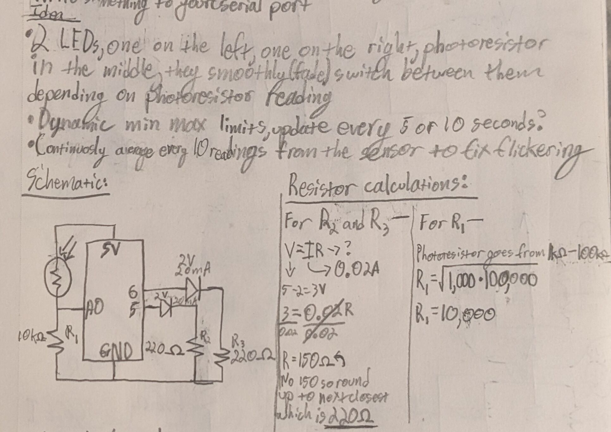
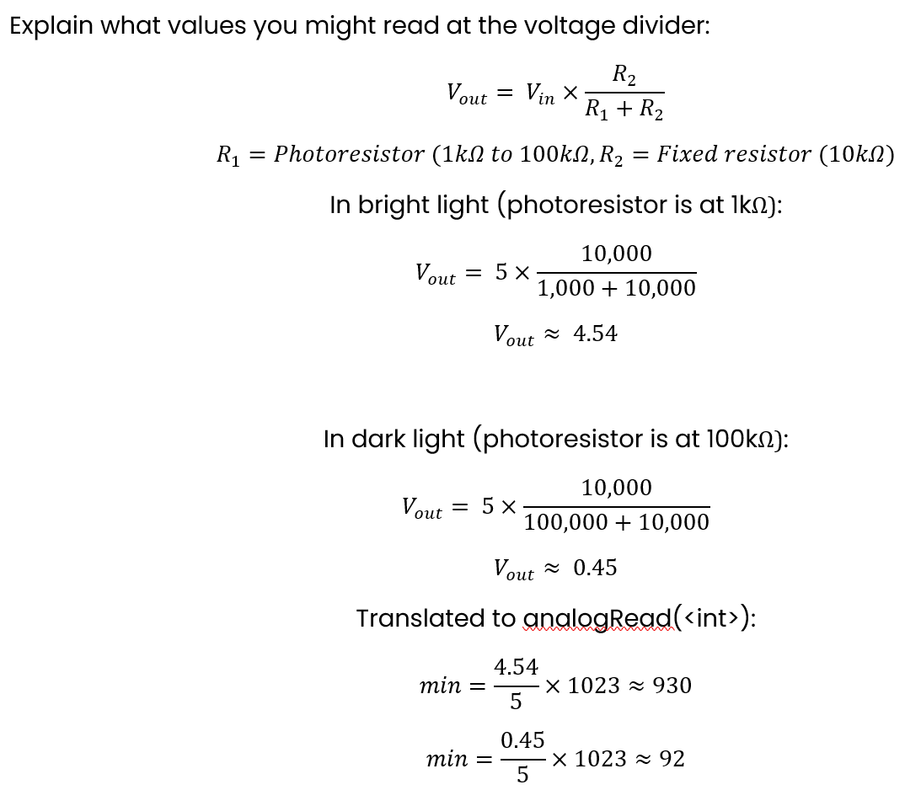
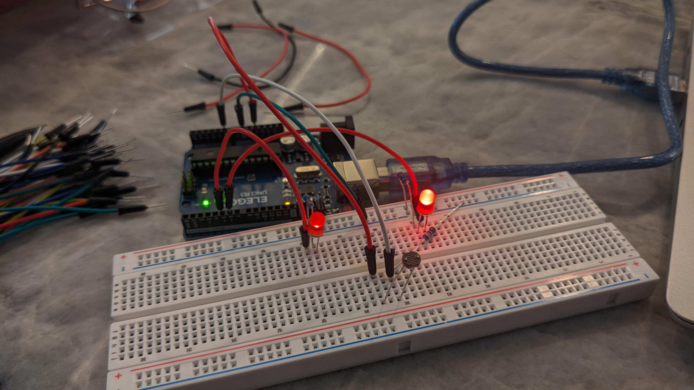
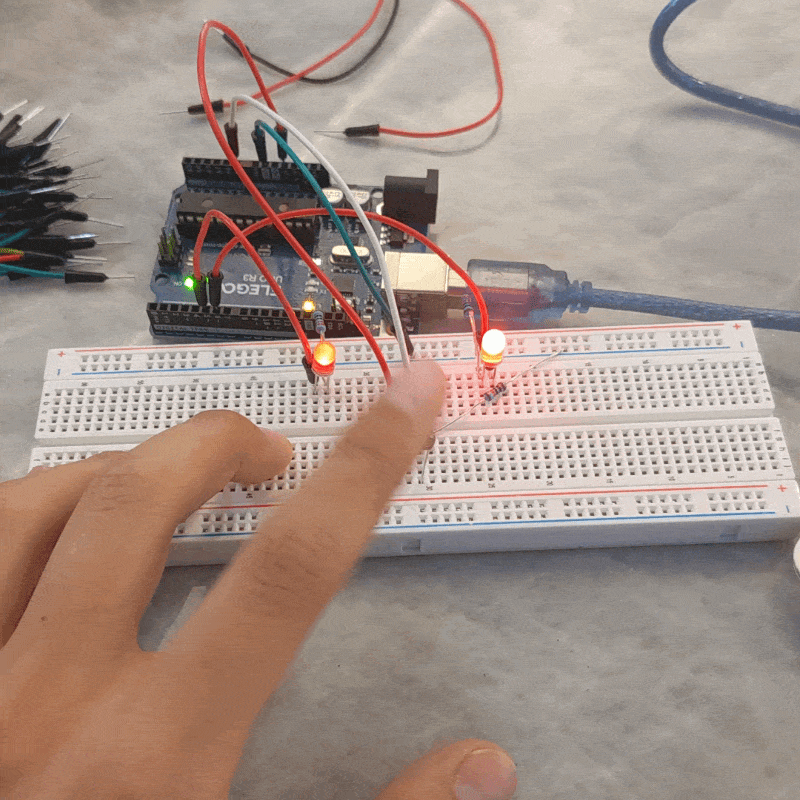
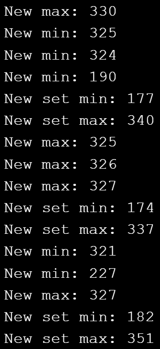
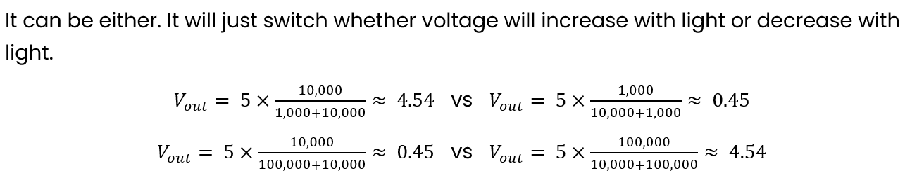
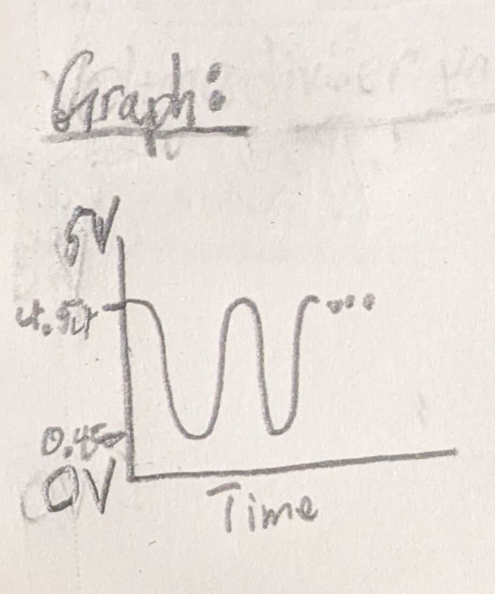
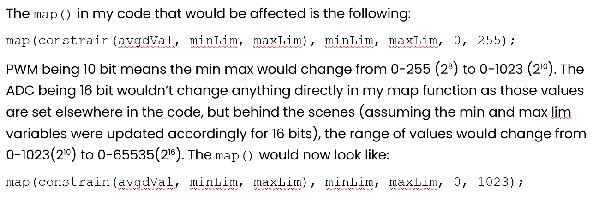

// Define LED and sensor pins used
const int leftLED = 5;
const int rightLED = 6;
const int sensorPin = A0;
// Defines variables needed for the sensor value smoothing logic
const int numForAvg = 10;
int sensorReadingsArray[numForAvg];
int index = 0;
int avgdVal = 0;
// Defines variables needed for the dynamic sensor limit logic
const int updateInterval = 5000;
int tempMinLim = 1023;
int tempMaxLim = 0;
const int minSpan = 100;
int minLim;
int maxLim;
// Defines variables needed for the timer logic
unsigned long prevMillis = 0;
unsigned long prevLogMillis = 0;
unsigned long logPacerInterval = 100;
unsigned long logCooldown = 0;
// Variable that holds the raw unproccessed sensor value
int rawSensorVal;
void setup() {
// Sets LED and sensor pins accordingly
pinMode(leftLED, OUTPUT);
pinMode(rightLED, OUTPUT);
pinMode(sensorPin, INPUT);
// Sets speed of serial communication (baud rate)
Serial.begin(9600);
// Performs initial calibration of the sensor
rawSensorVal = analogRead(sensorPin);
minLim = constrain((rawSensorVal - 200), 0, 1023);
maxLim = constrain((rawSensorVal + 200), 0, 1023);
}
void loop() {
// Reads raw sensor value
rawSensorVal = analogRead(sensorPin);
// If raw sensor value is larger than current max limit, set it as the new temp max limit
if (rawSensorVal > tempMaxLim) {
tempMaxLim = rawSensorVal;
// If it's been 100ms since the last log and outside the cooldown, print this log
if ((millis() - prevLogMillis) > logPacerInterval && millis() > logCooldown) {
// Print the new temp max
Serial.print("New max: ");
Serial.println(tempMaxLim);
prevLogMillis = millis();
}
}
// If raw sensor value is smaller than current min limit, set it as the new temp min limit
if (rawSensorVal < tempMinLim) {
tempMinLim = rawSensorVal;
// If it's been 100ms since the last log and outside the cooldown, print this log
if ((millis() - prevLogMillis) > logPacerInterval && millis() > logCooldown) {
// Print the new temp min
Serial.print("New min: ");
Serial.println(tempMinLim);
prevLogMillis = millis();
}
}
// If 5 seconds has passed since the last sensor limit update, set a new limits using the recorded temp limits
if (millis() - prevMillis >= updateInterval) {
prevMillis = millis();
// If the space between the min and max sensor limits are greater than 100, set new limits using the recorded temp limits
if ((tempMaxLim - tempMinLim) > minSpan) {
// Set the limits, constraining to prevent out of bounds. The +- 10 is to give a more visually dramatic result in fading
minLim = constrain((tempMinLim - 10), 0, 1023);
maxLim = constrain((tempMaxLim + 10), 0, 1023);
// Print this log no matter what then pause other logs for the next second
Serial.print("New set min: ");
Serial.println(minLim);
Serial.print("New set max: ");
Serial.println(maxLim);
logCooldown = (millis() + 1000);
}
// Reset the temp limit min maxes for the next round
tempMinLim = 1023;
tempMaxLim = 0;
}
// Append the raw sensor value to the list and advance the index
sensorReadingsArray[index] = rawSensorVal;
index++;
// If the list of values has reached 10, average the values contained in the list, map it, and set the LEDs
if (index > (numForAvg - 1)) {
// Add the values up
for (int v : sensorReadingsArray) {
avgdVal += v;
}
// Reset the index for the next round
index = 0;
// Average the summed values
avgdVal = avgdVal / numForAvg;
// Map the raw sensor value (ensuring it's constrained between the limits) to brightness values
int mappedSensorVal = map(constrain(avgdVal, minLim, maxLim), minLim, maxLim, 0, 255);
// Set the left and right LEDs brightness, left brighter when sensor reads darker, right brighter when sensor reads brighter
analogWrite(leftLED, (255 - mappedSensorVal));
analogWrite(rightLED, (mappedSensorVal));
// Reset averaged value for the next round
avgdVal = 0;
}
}




